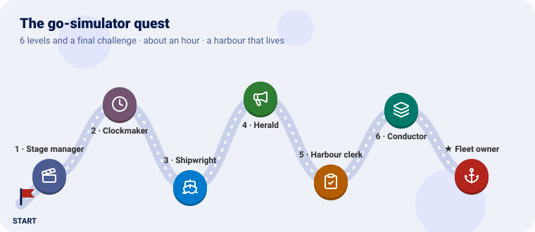
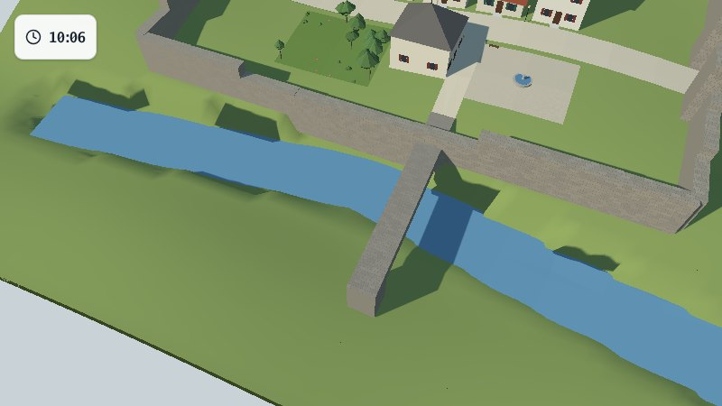
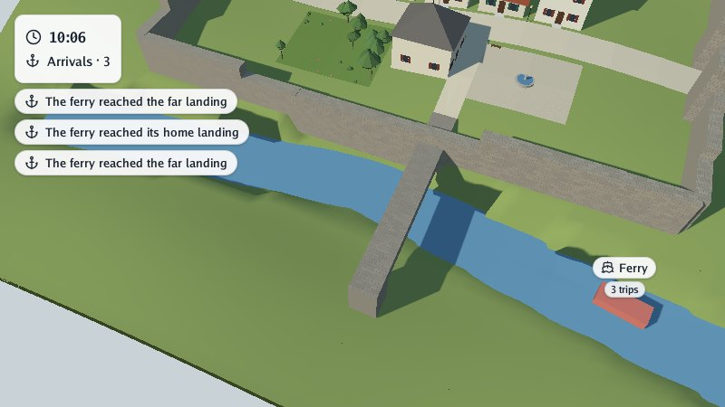
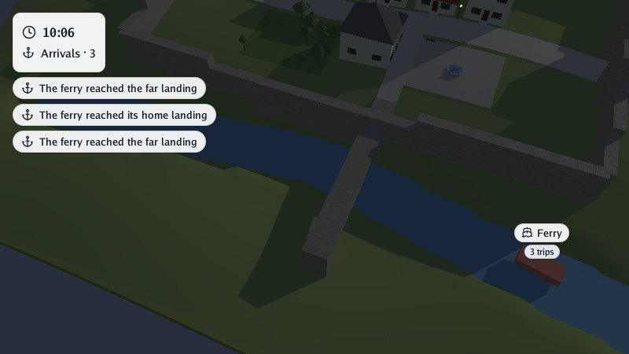
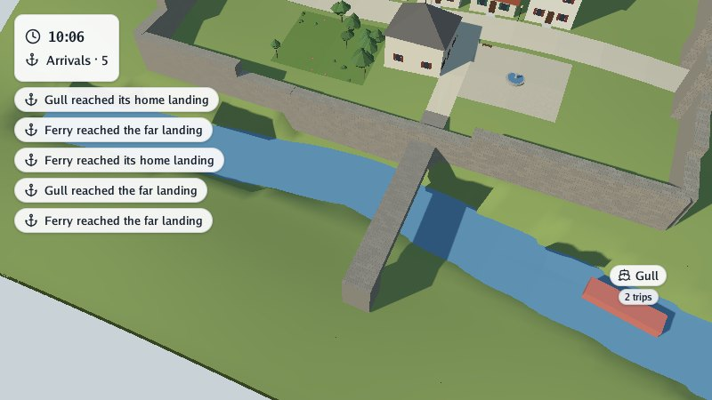
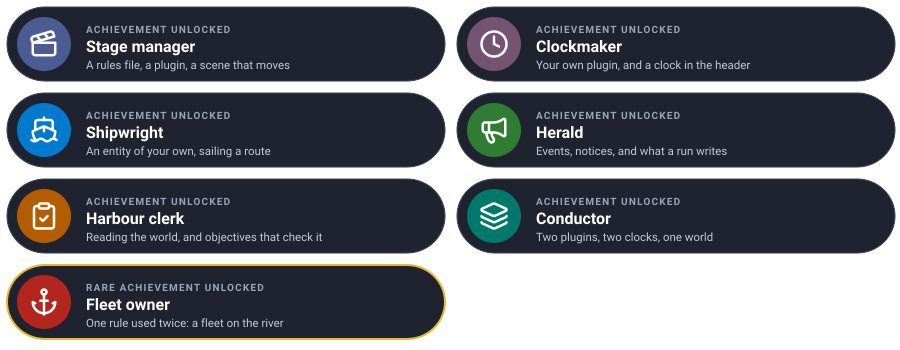

Bring a scene to life, one level at a time. Each level teaches one piece of go-simulator and ends with something new happening in the scene.

We will make a harbour that lives: the weather moving over a village, a clock in the corner of the screen, a ferry sailing up and down the river, notices when it lands, a clerk counting its trips, and in the end a whole fleet. You write a plugin of your own, in Go.
Every level has the same shape: the idea (explained with something from everyday life), the code, a checkpoint to know it works, and an optional bonus.
You need Go 1.25 and GEOS (sudo apt install libgeos-dev, brew install geos), and a scene. We use
the village from go-scene-builder’s quest:
any .glb works, but the coordinates below fit that village (scene units are kilometres; the river
runs east to west about 25 metres south of the centre).
Clone the projects side by side:
git clone https://github.com/akrck02/go-renderer
git clone https://github.com/akrck02/go-scene-builder
git clone https://github.com/akrck02/go-simulator
git clone https://github.com/akrck02/go-simulator-motion
mkdir quest && cd quest
cp ../village/village.glb . # or any scene
Two commands, which you will use all along:
# live: the scene in the viewer, with the simulation running
go run ../go-simulator/cmd/simulator -rules rules.yaml village.glb
# without a window: as fast as it can, to files
go run ../go-simulator/cmd/simulate -rules rules.yaml -scene village.glb -output results/
The pictures were taken with -advance 42 -look-at 0,0.025 -zoom 0.5 -capture shot.png.
This is where everything will live by the end:
quest/
├── village.glb
├── rules.yaml ← every level
└── harbour/ ← your plugin, from level 2
├── go.mod
├── main.go
├── clock.go ← level 2
├── ferry.go ← level 3
└── quay.go ← level 5
| Mission | Pieces | Time |
|---|---|---|
| Wind, clouds and the day passing over the village | a rules file, a plugin, a real-time stage | 5 min |
A theatre’s stage manager does not act: they follow a script that says who comes on, when, and what they do. go-simulator is the stage manager, the rules file is the script, and the plugins are the actors: separate programs, each knowing how to do a few things (rules).
The motion plugin knows how to turn the sun, blow the wind and drift the clouds.
rules.yaml:
plugins:
- name: motion
command: [go, run, .]
directory: ../go-simulator-motion
stages:
- name: weather
clock: realtime
rules:
- {rule: day_cycle, with: {seconds_per_day: 120}, toggle_key: T}
- {rule: gusts, with: {variation: 0.5}}
- rule: cloud_drift
A stage is a group of rules that share a clock; realtime follows the seconds you watch.
Run it live. The trees sway in gusts, and the sun crosses the sky in two minutes: shadows turn, and night falls. T stops and starts the day; P pauses; , and . slow time down or speed it up.
Learn more: Rules files · Running
| Mission | Pieces | Time |
|---|---|---|
| A plugin of your own, with a clock in the corner | plugin.Plugin, a rule, Start, Step, a stepped clock |
10 min |
A plugin is an actor with a few tricks (its rules). The stage manager calls it on stage at every step and asks: what changes now? The actor never touches the scenery itself: it answers with changes (“this thing moved”, “that label now says 08:30”), and the host applies them.
Anything in the world is an entity: an id, a kind and free properties. An entity with the
property pinned is shown in the header in the corner, so a clock needs no shape at all.
A module for the plugin, harbour/go.mod:
module example.com/harbour
go 1.25.6
require github.com/akrck02/go-simulator v0.0.0
replace (
github.com/akrck02/go-simulator => ../../go-simulator
github.com/akrck02/go-renderer => ../../go-renderer
github.com/akrck02/go-scene-builder => ../../go-scene-builder
)
harbour/clock.go, the rule:
package main
import (
"fmt"
"math"
"github.com/akrck02/go-simulator/plugin"
"github.com/akrck02/go-simulator/protocol"
"github.com/akrck02/go-simulator/world"
)
// clock writes the time of day in the header's first line. The stage's clock counts hours.
type clock struct{ start float64 }
var clockRule = plugin.Definition{
Description: protocol.RuleDescription{
Name: "clock",
Summary: "Shows the time of day in the header.",
Parameters: []protocol.ParameterDescription{{Name: "start", Type: "number", Default: 8, Summary: "hour the day starts at"}},
Writes: []string{"clock"},
Publishes: []protocol.OutputDescription{plugin.Kind("clock", "the harbour's clock, pinned to the header")},
},
New: func(parameters plugin.Parameters) (plugin.Rule, error) {
return &clock{start: parameters.Number("start", 8)}, nil
},
}
// Start adds the clock once: an entity with no shape, pinned first in the header.
func (rule *clock) Start(context *plugin.Context) error {
context.Add(&world.Entity{Identifier: "harbour-clock", Kind: "clock",
Properties: map[string]any{"label": rule.time(context.Time), "icon": "clock", "pinned": 1}})
return nil
}
// Step writes the new time on it.
func (rule *clock) Step(context *plugin.Context) error {
context.Modify(&world.Entity{Identifier: "harbour-clock", Properties: map[string]any{"label": rule.time(context.Time)}})
return nil
}
// time turns the stage's hours into "08:30".
func (rule *clock) time(hours float64) string {
total := math.Mod(rule.start+hours, 24)
return fmt.Sprintf("%02d:%02d", int(total), int(math.Mod(total*60, 60)))
}
harbour/main.go, the plugin (for now, Rules: []plugin.Definition{clockRule}):
// Command harbour is a simulator plugin: a clock in the corner, a ferry that crosses the river and
// a quay that counts its arrivals.
package main
import (
"log"
"github.com/akrck02/go-simulator/plugin"
)
func main() {
log.SetFlags(0) // logs go to standard error: standard output carries the protocol
harbour := &plugin.Plugin{Name: "harbour", Version: "0.1.0", Rules: []plugin.Definition{clockRule, ferryRule, quayRule}}
if err := harbour.Serve(); err != nil {
log.Fatal(err)
}
}
The rules file gets a second plugin and a stepped stage, whose clock counts hours, one step of three minutes every tenth of a real second:
plugins:
- name: harbour
command: [go, run, .]
directory: harbour
stages:
- name: day
clock: {unit: hour, from: 0, to: 12, step: 0.05, pace: 0.1}
rules:
- {rule: clock, with: {start: 8}}
(Keep the weather stage too, if you like: both run together.) Then, once: cd harbour && go mod tidy && cd ...
Live, a card in the top-left corner shows the time, from 08:00 on, three minutes every tenth of a
second. Without a window, simulate prints every step, day 0.05 … day 12, and ends.

Learn more: Writing plugins
| Mission | Pieces | Time |
|---|---|---|
| A ferry that sails up and down the river | an entity with a shape, its transform, parameters | 12 min |
A shipwright builds the boat once, then it sails. In Start the rule adds an entity with a
shape (a red box, standing in for a boat); at every Step it modifies only what changed: its
place (Transform) and its badge. The rest stays as it was.
Where it sails comes from the rules file, as parameters: the same rule can sail any river.
harbour/ferry.go:
package main
import (
"fmt"
"math"
"github.com/akrck02/go-simulator/plugin"
"github.com/akrck02/go-simulator/protocol"
"github.com/akrck02/go-simulator/spatial"
"github.com/akrck02/go-simulator/world"
)
// ferry crosses back and forth along a route, and says when it arrives at either end.
type ferry struct {
route [][2]float64 // points (x, z) in the scene's units
speed float64 // scene units an hour
distance float64 // how far along the route it is, forth and back
trips int
}
var ferryRule = plugin.Definition{
Description: protocol.RuleDescription{
Name: "ferry",
Summary: "Sails a ferry along a route, back and forth.",
Parameters: []protocol.ParameterDescription{
{Name: "route", Type: "list", Summary: "points [x, z] it sails through"},
{Name: "speed", Type: "number", Default: 0.2, Summary: "scene units an hour"},
},
Writes: []string{"ferry"},
Publishes: []protocol.OutputDescription{plugin.Kind("ferry", "a boat on a route"), plugin.Event("arrival", "the ferry reached an end of its route")},
},
New: func(parameters plugin.Parameters) (plugin.Rule, error) {
rule := &ferry{speed: parameters.Number("speed", 0.2)}
points, _ := parameters["route"].([]any)
for _, point := range points {
pair := plugin.VectorFrom(point, spatial.Vector{})
rule.route = append(rule.route, [2]float64{float64(pair[0]), float64(pair[1])})
}
if len(rule.route) < 2 {
return nil, fmt.Errorf("ferry: a route needs two points at least")
}
return rule, nil
},
}
func (rule *ferry) Start(context *plugin.Context) error {
place := rule.placement()
context.Add(&world.Entity{Identifier: "ferry", Kind: "ferry", Transform: &place,
Shape: &world.Shape{Primitive: "box", Size: spatial.Vector{0.003, 0.0015, 0.007}, Color: &[4]float32{0.7, 0.2, 0.15, 1}},
Properties: map[string]any{"label": "Ferry", "icon": "ship"}})
return nil
}
func (rule *ferry) Step(context *plugin.Context) error {
length := rule.length()
before := math.Floor(rule.distance / length)
rule.distance += rule.speed * context.Step
if math.Floor(rule.distance/length) > before { // passed an end of the route
rule.trips++
end := "its home landing"
if rule.trips%2 == 1 {
end = "the far landing"
}
context.Emit("arrival", map[string]any{"trips": rule.trips, "notice": "The ferry reached " + end, "icon": "anchor"})
}
place := rule.placement()
context.Modify(&world.Entity{Identifier: "ferry", Transform: &place,
Properties: map[string]any{"badge": fmt.Sprint(rule.trips, " trips"), "trips": rule.trips}})
return nil
}
// placement is where the ferry is now, turned to face where it goes.
func (rule *ferry) placement() spatial.Matrix {
length := rule.length()
along := math.Mod(rule.distance, 2*length)
if along > length { // on the way back
along = 2*length - along
}
for index := 0; index+1 < len(rule.route); index++ {
from, to := rule.route[index], rule.route[index+1]
segment := math.Hypot(to[0]-from[0], to[1]-from[1])
if along <= segment || index+2 == len(rule.route) {
share := math.Min(along/segment, 1)
x, z := from[0]+(to[0]-from[0])*share, from[1]+(to[1]-from[1])*share
heading := math.Atan2(to[0]-from[0], to[1]-from[1])
place := spatial.Translation(spatial.Vector{float32(x), 0.0115, float32(z)})
turned := spatial.RotationY(heading)
return multiply(place, turned)
}
along -= segment
}
return spatial.Identity()
}
func (rule *ferry) length() float64 {
total := 0.0
for index := 0; index+1 < len(rule.route); index++ {
total += math.Hypot(rule.route[index+1][0]-rule.route[index][0], rule.route[index+1][1]-rule.route[index][1])
}
return total
}
// multiply is first × second, column-major.
func multiply(first, second spatial.Matrix) spatial.Matrix {
var result spatial.Matrix
for column := range 4 {
for row := range 4 {
for index := range 4 {
result[column*4+row] += first[index*4+row] * second[column*4+index]
}
}
}
return result
}
Add ferryRule to the plugin’s rules, and the ferry to the stage:
- rule: ferry
with: {route: [[-0.05, 0.0295], [0, 0.0215], [0.05, 0.0315]], speed: 0.15}
The route is in the scene’s units (kilometres), [x, z], with z growing to the south.
A red ferry sails along the river, under the bridge, turns at the end and comes back; its label says how many trips it has made.

| Mission | Pieces | Time |
|---|---|---|
| Notices when the ferry lands, and what a run writes | Emit, notice, events.jsonl |
6 min |
A town herald rings a bell and calls out the news. A rule’s event is news: a name and some
data, sent to whoever listens. An event with a notice is also called out on screen, under the
header, and fades after a few seconds.
ferry.go already emits one at each end of the route:
context.Emit("arrival", map[string]any{"trips": rule.trips, "notice": "The ferry reached " + end, "icon": "anchor"})
Live, notices appear under the clock as the ferry lands. Without a window, the run writes
results/events.jsonl, one event per line:
{"data":{"icon":"anchor","notice":"The ferry reached the far landing","trips":1},"name":"arrival","origin":"harbour","stage":"day","time":0.7}
Emit a bell event every hour, with a notice.
Learn more: Labels, header and notices
| Mission | Pieces | Time |
|---|---|---|
| Count the ferry’s trips, and check the day went right | reading the world, Reads, objectives |
10 min |
A clerk keeps the books by looking, not by being told: they walk down to the quay and count.
A rule says what it reads (here, entities of kind ferry), and its plugin’s copy of the world
stays up to date with those. The clerk sums every ferry’s trips.
Objectives are the result you expect, written in the script: a ferry on the river, a dozen trips by the evening. A run without a window checks them and fails if one is missed, so a change that breaks the harbour shows at once.
harbour/quay.go:
package main
import (
"fmt"
"github.com/akrck02/go-simulator/plugin"
"github.com/akrck02/go-simulator/protocol"
"github.com/akrck02/go-simulator/world"
)
// quay counts every ferry's trips, read from the world, in the header's second line.
type quay struct{ arrivals int }
var quayRule = plugin.Definition{
Description: protocol.RuleDescription{
Name: "quay",
Summary: "Counts the ferry's arrivals.",
Reads: world.Interest{Kinds: []string{"ferry"}},
Writes: []string{"counter"},
Expects: []protocol.InputDescription{plugin.ReadsKind("ferry")},
Publishes: []protocol.OutputDescription{plugin.Kind("counter", "a number in the header"), plugin.Event("quay", "arrivals so far")},
},
New: func(plugin.Parameters) (plugin.Rule, error) { return &quay{}, nil },
}
func (rule *quay) Start(context *plugin.Context) error {
context.Add(&world.Entity{Identifier: "quay-counter", Kind: "counter",
Properties: map[string]any{"label": "Arrivals", "badge": "0", "icon": "anchor", "pinned": 2}})
return nil
}
func (rule *quay) Step(context *plugin.Context) error {
rule.arrivals = 0
for _, boat := range context.World.EntitiesOfKind("ferry") {
trips, _ := boat.Properties["trips"].(int)
rule.arrivals += trips
}
context.Modify(&world.Entity{Identifier: "quay-counter", Properties: map[string]any{"badge": fmt.Sprint(rule.arrivals)}})
context.Emit("quay", map[string]any{"arrivals": rule.arrivals})
return nil
}
Add quayRule to the plugin and the stage, and objectives to the stage:
- rule: quay
objectives:
- {name: a ferry on the river, at: 1, count: {kind: ferry}, min: 1, max: 1}
- {name: a dozen trips by the evening, at: 12, event: quay, value: arrivals, min: 12}
The header’s second line counts the arrivals. Without a window the run ends with:
reached · a dozen trips by the evening at 12.000000000000036: 17 (expected at least 12)
objectives: 2 of 2 reached
and results/objectives.json. Set the ferry’s speed to 0.05 and run again: the objective is
missed, and simulate fails.
Learn more: Objectives · Architecture
| Mission | Pieces | Time |
|---|---|---|
| Your plugin and the motion plugin together | two plugins, two stages, two clocks | 5 min |
An orchestra plays one piece with many players who never talk to each other: they all follow the conductor and listen to the same music. Plugins are the same: none knows the others, they only share the world. Here the weather turns the day while your harbour keeps its own clock.
Both plugins and both stages in one file:
plugins:
- name: harbour
command: [go, run, .]
directory: harbour
- name: motion
command: [go, run, .]
directory: ../go-simulator-motion
stages:
- name: day
clock: {unit: hour, from: 0, to: 12, step: 0.05, pace: 0.1}
rules:
- {rule: clock, with: {start: 8}}
- rule: ferry
with: {route: [[-0.05, 0.0295], [0, 0.0215], [0.05, 0.0315]], speed: 0.15}
- rule: quay
- name: weather
clock: realtime
rules:
- {rule: day_cycle, with: {seconds_per_day: 120}, toggle_key: T}
- {rule: gusts, with: {variation: 0.5}}
- rule: cloud_drift
The ferry sails, the clock runs and the arrivals count, while the sun crosses the sky and the trees sway. Press N for the night: the village’s lamps glow, and the labels stay readable.

Make the harbour’s clock read the hour from the sun instead of its own stage.
Learn more: Architecture: interests
Put a second ferry, called Gull, on the river, sailing the other way and more slowly. The clerk counts both, and the objectives ask for two ferries and twenty trips.
Hint: the same rule can be used twice in a stage, with a
namefor each use. Each ferry needs an id of its own, so give the rule anameparameter and use it as the entity’s id, its label and in its notices.
Try it on your own first, then compare with the solution.

- rule: ferry
with: {route: [[-0.05, 0.0295], [0, 0.0215], [0.05, 0.0315]], speed: 0.15}
- rule: ferry
name: second ferry
with: {name: Gull, route: [[0.05, 0.0315], [0, 0.0215], [-0.05, 0.0295]], speed: 0.1}
- rule: quay
objectives:
- {name: two ferries on the river, at: 1, count: {kind: ferry}, min: 2, max: 2}
- {name: twenty trips by the evening, at: 12, event: quay, value: arrivals, min: 20}
You wrote a simulator from scratch, ran it with and without a window, checked it with objectives and played it beside another plugin.
| Idea | Difficulty | Hint |
|---|---|---|
| Passengers on the badge | ⭐ | A number that goes up at each landing, in the ferry’s properties |
| A plugin in another language | ⭐⭐ | JSON frames over standard input and output: protocol |
| A field: the river’s depth as a grid | ⭐⭐ | context.SetField, then snapshot_fields writes it to files |
| A town that grows round the harbour | ⭐⭐⭐ | The urban plugin and a scene_style |
| You see | Why, and what to do |
|---|---|
starting plugin "harbour": exec: "go": executable file not found |
Go is not on the PATH of the shell that runs the simulator |
stage "day": no plugin offers rule "ferry" |
The definition is not in the plugin’s Rules list |
… made a change that cannot apply: entity "ferry" does not exist |
Modify before Add: add it in Start |
| Nothing moves live | A stepped stage with pace: 0 only steps on request: give it a pace |
| The ferry is under the ground or flies | Its height (0.0115 in placement) is in scene units: try a little more or less |
| A plugin prints garbage | Standard output carries the protocol: log to standard error (log.Print) |